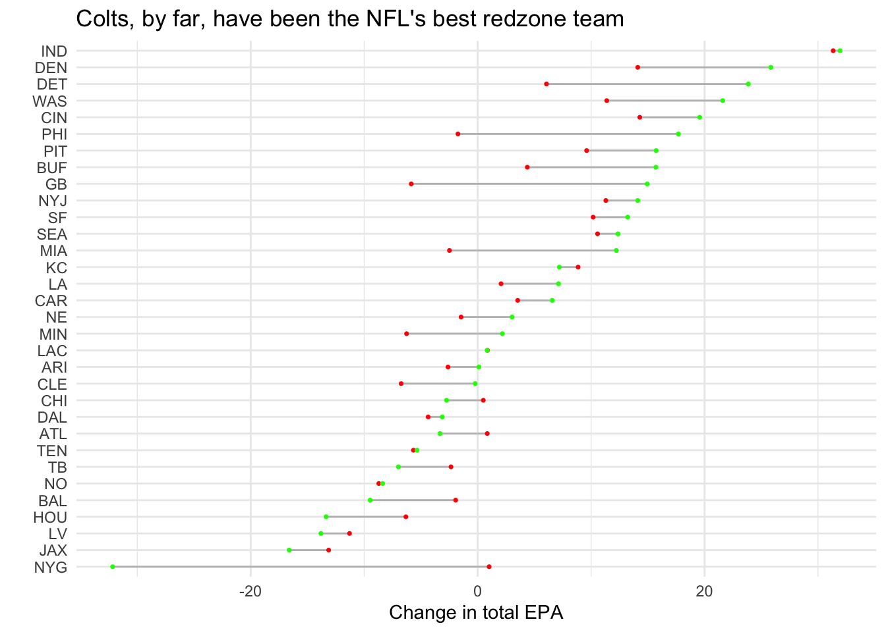

#Miami had a total EPA of just over nine in the redzone through three games. For the entire rest of the season, Miami's EPA was 3.75. In other words, Miami got significantly worse after the first three weeks.
epa_chart <-dw_create_chart(type="d3-range-plot",title="Colts, by far, have been the NFL's best redzone team")
New chart's id: bLRTZ
Code
dw_data_to_chart(redzone_comparison, epa_chart)
Data in bLRTZ successfully updated.
Code
dw_edit_chart(epa_chart, title ="Colts, by far, have been the NFL's best redzone team", intro ="Meanwhile several teams, highlighted by the Giants, have taken major steps back in their redzone performance based on EPA totals.", source_name ="Data via nflreadr")
Chart bLRTZ succesfully updated.
Code
embed <-HTML('<iframe title="Colts, by far, have been the NFL\'s best redzone team" aria-label="Range Plot" id="datawrapper-chart-5yHi6" src="https://datawrapper.dwcdn.net/5yHi6/1/" scrolling="no" frameborder="0" style="width: 0; min-width: 100% !important; border: none;" height="715" data-external="1"></iframe><script type="text/javascript">window.addEventListener("message",function(a){ if(void 0!==a.data["datawrapper-height"]){ var e=document.querySelectorAll("iframe"); for(var t in a.data["datawrapper-height"]) for(var r,i=0;r=e[i];i++) if(r.contentWindow===a.source){ var d=a.data["datawrapper-height"][t]+"px"; r.style.height=d } }});</script>')browsable(embed)
Code
#and i did the ugly ggplot version tooggplot() +geom_dumbbell(data=redzone_comparison, aes(y=reorder(posteam, byweek9_total_epa), x=byweek3_total_epa, xend=byweek9_total_epa), linewidth =5, color ="grey", colour_x ="red", colour_xend ="green") +labs(title ="Colts, by far, have been the NFL's best redzone team", x ="Change in total EPA", y ="") +theme_minimal()
Warning: Using the `size` aesthetic with geom_segment was deprecated in ggplot2 3.4.0.
ℹ Please use the `linewidth` aesthetic instead.

A Daniel Jones-led Indianapolis Colts team have quite stunningly emerged as the NFL’s best redzone offense through the first nine weeks of the 2025 season.
By a lot.
Based on expected point added (EPA) metrics — a measure that determines the value of a play based on how it impacted the team’s likelihood to score — the Colts have not improved their redzone offense much from how it started the first three weeks of the season. But it would be pretty hard for the Colts to improve at all with an already absurdly high-scoring offense.
Through nine weeks, the Colts have a total redzone EPA of 31.94 over 112 plays inside the 20 yard line. Only the Kansas City Chiefs have run more plays in the red zone, but the Chiefs EPA is nearly 25 points below the Colts.
Strictly based on points per game, the Colts are the best team in the NFL by roughly two points. Indianapolis is the only team averaging more than 30 points per game at this point in the season. It makes a lot of sense given how often the Colts have been in redzone, and how often the Colts have taken advantage of their opportunities — all while being incredibly consistent in doing so as shown by their EPA in the redzone after three games and again after nine games only differed by 0.6 points.
On the other end of the spectrum are the New York Giants. Through the first three weeks, the Giants were in the upper half of the league in EPA in the redzone.
Everything has been horrible since. The Giants were at total EPA of about 1 in the redzone through Week 3. Through Week 9? The Giants are now -32.17. It’s a truly staggering falloff, especially for a team that had seemed, at least from the surface, to be playing better with a rookie quarterback.
The Giants have also been in the redzone far less frequently. Through the first three weeks, the Giants ran 45 plays in the redzone. In the six weeks to follow, the Giants ran just 50 plays in the redzone. It is hard to create a good EPA in the redzone when you aren’t getting there at all.
Largely, it does seem that having a strong redzone EPA does lend itself to being a better team. The 10 teams with the best EPAs through nine weeks are the Colts, Broncos, Lions, Commanders, Bengals, Eagles, Steelers, Bills, Packers and Jets. Seven of those teams are likely going to the playoffs.
But redzone EPA also doesn’t explain everything about a team. The Commanders have been good in the redzone so far, but have had instability at quarterbacks and appear likely to have lost Jayden Daniels for the long term. The Bengals have actually improved their redzone EPA since losing starting quarterback Joe Burrow. The Jets are, well, the Jets and are somehow still in the top 10. Similarly, most of the NFL’s most struggling teams are at the bottom of the chart.
The NFL has also been incredibly varied in terms of sustained redzone performance. There are several teams (most of which clustered toward the top of the chart) which have seen significant improvement in their redzone EPAs since Week 3. But there are also a little under half the teams which have barely changed their performance at all. Sometimes, using the Chiefs as an example, it is hard to break out of a specific flaw a team has, especially with so few games and opportunities to do so.